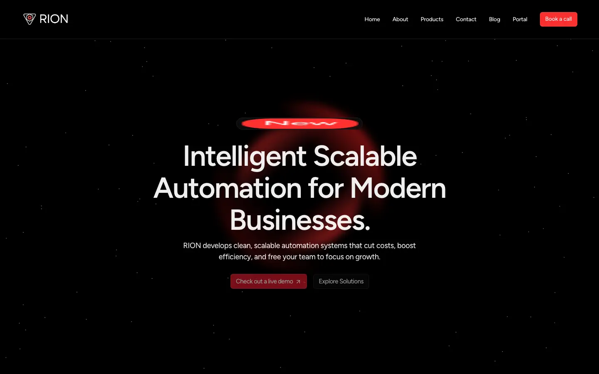

Company site rebuild
RION Solutions website
A rebuild of the RION Solutions website in Next.js.
- rionsolution.com
- Private repo

By the numbers
- 14 of 18commits are mine
What I did
- Rebuilt the Framer site in Next.js with Tailwind and Framer Motion.
- The live site still runs the Framer version.